Archives : 2007-10
侉子.长江750 @ Oct 31, 2007
听朋友说北京上海有帮喜爱长江750三轮摩托车的车迷，我们管我们住的地方叫中原，南边的叫蛮子，北边的叫侉子，东边的叫夷，西边的叫戎。北京人就管这车叫“侉子”。这车时尚的说法是复古，复古其实就是中国人概念里的“土”（古老、原始、陈旧、过时的...）吧？所以这车叫侉子？
长江750的原形是bmwr71摩托车。1939年，斯大林想为苏联红军装备机动性很强的摩托，他想到了一种750cc、对置双缸、带边车的摩托车，那就是当时德国的bmwr71。后来5辆bmw摩托车被“走私”到了苏联，这些车被解体、测绘……苏联人造出了乌拉尔（ural）m-72型摩托车。
美国人的哈雷没有重样的，而京城挎子车迷的坐骑也各不相同。长江750还有很火的改装空间。北京人、包括在北京的外国人偏爱两种摩托车，一种是美国的哈利戴维森，一种就是这款中国的长江750型边三轮摩托车。许多年轻的摩托发烧友也逐渐从钟爱二轮转向三轮。但南京没见着玩这种车的。
现在，它在中国摩托车中的地位，可以说相当于哈利在世界摩托车中的地位。长江750还出口到北美、欧洲和日本，一朋友公司差点出口侉子车，出厂价在USD2500.00。在日本，一辆长江750卖到100万日元。长江出口到欧洲被注册为“BlackStar”出售，价格不低。很多驻华的法国人回国时都会买一辆长江750，并且会要求国内的经销商将产品合格证或者发票的日期改写为196X年，据说这样的话，进口时尾气要求不严格。2001年，乌拉尔“侉子”拿到了“绿色环保标志”，在美国按常规摩托车销售。时至今日，网络上还有很多海外用户在寻找“长江750”。 国内商家承诺3周左右可运抵世界上大多数国家。国内不少车迷不断对它进行个性化的设计和改装，成立侉子联盟，长江750开起来有些粗糙、生硬，加速慢，刹车比较“肉”，挂挡发出较大的声响，悬挂的减振效果有限，但这并不妨碍人们喜欢它。
有两个原因促使“侉子”成为北京车迷的宝贝。一个是由于长江酷似当年的BMWR72，所以很多怀旧的外国人兴高采烈地骑着它们在京城三里屯一带耍，而且边斗里坐着的姑娘都说有一种坐敞蓬汽车的感觉，在京的外国人还组成了一支“侉子”车队。另一个原因就是北京在对两轮摩托车限牌后的很长一段时间里，对“侉子”的牌照是放开的。


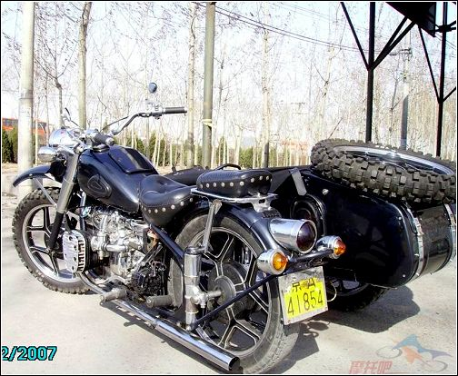
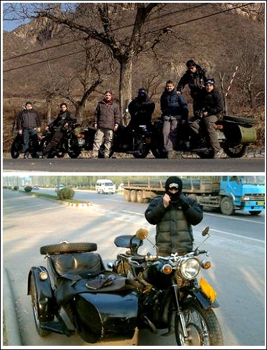
《1973》 @ Oct 31, 2007
James blunt 《1973》.MP3
专辑名称 ：All the Lost Souls
艺人姓名 ：James Blunt
发行日期 ：2007年09月18日
追忆往日情怀，旋律优美而伤感，中午在车上听到这张碟的第一首歌“1973”，立刻被吸引住了...
Simona
希姆娜
You're getting older
青春不再眷顾你
Your journey's been
Etched on your skin
往昔印刻在你的容颜
Simona
希姆娜
Wish I had known that
我真希望我能明白
We seemed so strong
曾经存在于我们之间的默契
We've been there and gone
我们匆匆而来，又转身离去......
I will call you up everyday Saturday night
我会在每周六约你
And we both stayed out 'til the morning light
心手相连，直到天明
And we sang, "Here we go again"
我们一起吟唱着：“Here we go again”
And though time goes by
纵使青春不再
I will always be
In a club with you
我也会一直在那个酒吧陪着你
In 1973
在那个令人难忘的1973年
Singing "Here we go again"
吟唱着：“Here we go again”
穿衣话题 @ Oct 30, 2007
心理学家讲：“一种颜色，每个人看到的都是不同的。”
大湖Says：Disclaim; I’m not here to criticize anyone’s dress preference.
Generally speaking, people everywhere dress for an occasion properly. For example, you will dress differently when you are attending a wedding, vs. a funeral, go to church on Sunday vs. a night-out around town with friends. When people go to work for business, people should dress up like they mean to do business. Because each individual is part of the company and their image is part of the company’s image.
I have seen ladies wear high-heel shoes on the top of the “Yellow Mountain” instead of hiking boots, and construction worker in their western style suits instead of working cloth. But right or wrong, who has the rights to judge?
Michael Says：what do you wear to work everyday?
How’s your working going?
Could you make more money based on a nice suit? Or do you think that the spirit and thoughts under the suit is more important?
What’s the difference between the formal and leasure clothing?
Now the employers tend to creat a comfortable working friendly environment for the workers which can stimulate the enthusiasm, creativity, passion…? what do you think?
Some people call the suit “monkey’s cloth”. What do you think?
emmaemma Says：hey Michael, i can’t help but wanna say with the suits we are wearing everyday, are just following our company’s dress code on what’s appropriate for the workplace, in order to maintain a level of professionalism …hmm but Christina, a ripped jeans, i don’t know, but again, i personally think it rocks! ;)
我也要说说：我很希望出席不同场合穿着相符的衣饰！很希望中国能形成这样的氛围。这一点我是认同并赞同的。
小时候喜欢临摹服装样本，到画出自己想象中的款式，乐此不疲。但工作后渐渐发现穿着受环境影响。如果我每天穿职业套装、高跟鞋去上班会感到不自在，会感觉自己是异类。主管试图营造职业化装扮的环境，但好象配合的人不多。当然穿破了的裤子上班不合适，为此我父母每每见着都要批评，但比起暴露的酒吧装和花里胡哨的shopping装，颓废装算laylow的啦~不过工作场合虽然可以随便穿，如果你不想让别人以为你太平庸，那么，穿戴整齐严肃些，针对你想要的形象来穿，而不是根据你现在的位子而穿，这对职场发展有点作用。
留心观察，你会发现西装革履的人大多是银行职员、保险公司推销员或者房产公司销售....规范装束的确给人良好的企业形象，这是不争的事实；贸易行业有需要着正装的场合，最需要穿正装的时候估计除了见对方高层之外，其他均看自己需要或听从公司安排。比如展会、拜访客户，穿休闲装的人不在少数，并无突兀或不妥。
见过爬黄山穿高跟鞋，郊游穿正装的游客...中国有多少人每年有旅行计划？有多少人有时间、精力和财力到更远的地方旅行？（相信欧美国家也有这样一些人只能在附近转转。）他们一定是把自己认为最中意的衣服穿出来，或许人家认为对于这一年或多年来讲这次旅行（郊游）很是重要而隆重，我父母小区里有位60多岁女士，每天穿旗袍，脚蹬高跟鞋，化浓妆，即使清晨锻炼也这样打扮，她说以前年轻时家里穷，整个大环境也不允许，现在年纪大了要好好打扮打扮，把过去的时光都补回来。不是每个人都具有成熟的穿衣观，并且这和年龄无关，了解这些之后是不是可以理解并宽容呢？发展中的中国会逐渐形成自己的穿衣观，稚嫩到成熟需要过程，民族的就是时尚的！
今天穿了皱巴巴的皮衣+破牛仔裤，我父母见了不知会怎样的惊讶~有时觉得挑战他们的审美很funny：）
图.壹.张 @ Oct 29, 2007

年龄限制？ @ Oct 29, 2007
有位网友说：“老实说我一直不懂熟女的定义。这个定义可能因人而异，也可能因国家而异。我猜测美国人心目中的熟女大概不会小于40岁，日本人不会承认小于30岁的女人为熟女。到了中国，熟女的下界很可能到了25岁，这年头连刘亦菲同学都有人觉得老了。”
看完笑死人家了，最后一句话我觉得实在很符合国情. Sigh, 中国人的观念！
记得有个MM曾恶狠狠地在MSN上写道：“老女人装清纯，恶心。”过了30长得年轻不是人家的错，你眼睛里看到是装出来的清纯也不是人家的错，对相貌年轻的女性如此忿忿不平就是你的问题。再说了世上有哪个人会一直徘徊在20岁的年纪里呢？如果有，那肯定不是人类。别把时间浪费在忿忿不平上，你改变不了别人的年轻，你可以改变的是自己的心态，享受每个年龄段带来的不同体会，你的人生一定也会经历30、40、50...
有位女子在博客里写道：28岁准备去国外读大学，有人就说：“我可去不了，我都30了，读出来都老了，还要找工作什么呢。”对方看起来挺干练的，职业女性的样子，挺吃惊她有这样的观念。Okay，去不去读书有很多理由的，比如我不想读了，想直接去工作，我想先生baby再说，都成立，但是千万不要说——我已经老了。难道你的人生在30岁时便即将结束了？30 岁连尝试新的学习、新的职业的勇气都拿不出来了？如果你内心真想去做的话，为什么不去呢？30岁就老了，那么40岁、50岁会是怎样的哀叹？用年龄来限制自己是一件划地为牢的傻事（除了不可抗拒的自然因素以外），我以为已经是全球常识了呢，但是发现对很多中国人来说并不是这样。
大多数人都在看别人怎么过，自己再怎么过，而不去听从内心的召唤。生活不是模仿，也不是show，中国人缺乏个性生活。人云亦云最不容易出错，是吗？
毛毛 @ Oct 29, 2007
我是毛毛，我的妈妈是Jane，我在妈妈肚子里的时候，妈妈拍了很PP的写真呢！看我刚出生时的摸样和4多月大的我很不一样吧？呵呵~我现在可是小帅哥啦~眼神超温柔~

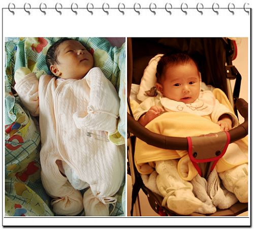
Christina阿姨抱着刚出生三天的我，是不是很迷你啊？：）
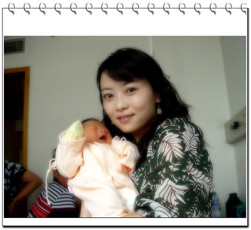
简单生活.简单爱 @ Oct 25, 2007
有个小女生遇到了爱情，众人祝福她找到幸福，我想告诉她这只是另一段生活刚刚开始。她写自己喝酒抽烟，活得热闹而欢乐，可是独自一人时仍然寂寞孤独，之后...她有了喜欢的人...我有些心疼，为那些热闹而欢乐的片段。如果她能看到这些文字，希望她能明白孤独是常态，每个人都是孤独的。想着法子驱赶孤独，往往那时侯会做错事！她的BLOG绚丽喧闹，象在迪吧里，看似陶醉的摇曳身姿，实则茫然空虚，颇具表演性。有一天她会找到属于自己的真实，希望过程不要太曲折！
陈丹青说：“青春就象一条野狗，一不高兴就跑出去撒野了。”
青春是奢侈品，青春是可以拿来挥霍的？！
不能挥霍的是心灵，心灵需要保护。有个MM说早晨5：30想到“回归”这个词,心灵终将回归~
岳敏君.作品 @ Oct 25, 2007
我的作品就是幻想和虚构，描述了我眼中的"真实"世界,在一种不"真实"中重塑自我。
::::::::: 岳敏君 :::::::::


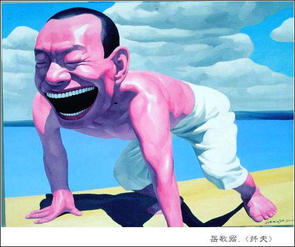
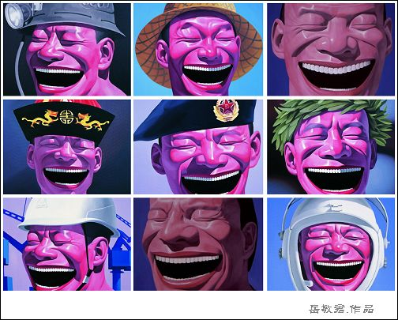
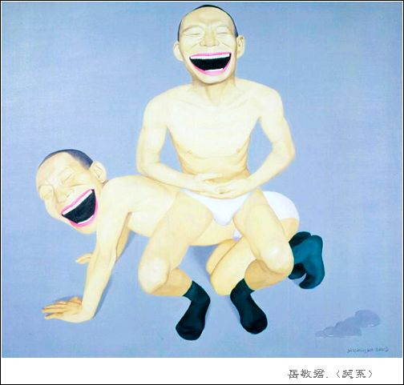
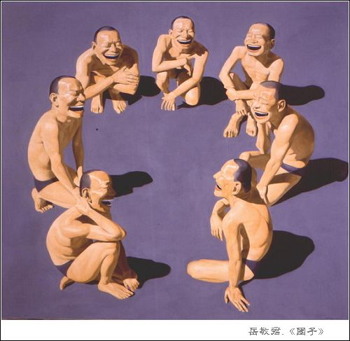
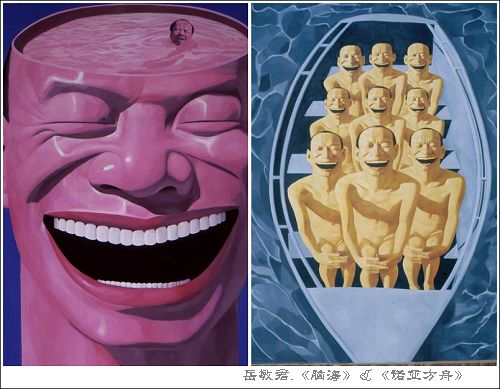

“neck of the woods” @ Oct 24, 2007
Someone loves the color of the sky!
--Shot by someone

无题 @ Oct 23, 2007
从停车场跑到检票口已经7：10分，只能签下班7：52的火车。就那么点距离，已跑得两腿发软，大口喘气，这是4年没有健身的惨状。
一路去，一路回，闻了一路动车车厢里好似千年积攒下来的老臭味，中国封闭式车厢是否符合国情？还是不要吝啬自家香水，多用用何仿，管他人印象是好是坏。展馆里全无清新空气与咖啡醇香，逛几个小时便浑身是汗，大部分中国人看上去灰朦朦的，从面色到服饰。
晚上回到家洗了澡，马桶下面的水管可能是老化而断裂？自来水爆冲出来，慌乱中不得不甩掉鞋光着脚，修理无果只好关闭总阀。第一次遇见这种问题，找谁修理？如何修理？还是应该换掉整个马桶？早已对这只马桶的冲水方式不满，换掉它应该是最简单的解决之道？
对于出差，新人永远是兴致勃勃，一如曾经的我。不放过每个可以出差的机会。出差究竟能给自己的工作带来多少促进和积累？新人变旧人，工作的不同阶段各人会生出不同体会和总结，当然有效率的出差应该提倡。展会上遇见一些曾经的老同事，交谈许多，无论自己做老板还是替人打工皆有爽与不爽，现状未必是自己主动选择，恰恰会有“不得不”的境遇，皆有不易。不过那些自己做的倒是谦和低调得多。现实淹没理想？岁月沉淀了轻狂？常看到某些意气风发的年轻人充满斗志的面孔、吐沫四溅的言论，生怕自己是不被瞩目的那一个。而另一些人难见大悲大喜，为人中透着无尽的宽厚，塌实有力，一切深藏于眼睛背后，难为人知。
新伙伴 outlander EX 3.0 @ Oct 21, 2007
10月购进outlander EX 3.0豪华版，最近一期《汽车之友》杂志針对outlander EX 2.4L和honda新CRV做了对比，评价自有公断。不过2.4L和3.0配备了不同的发动机，据说轮毂比3.0小，今年年底进口销售。


重阳.壮蟹肥虾 @ Oct 19, 2007
“珍爱湿地资源，呵护自然环境，倡导生态文明，生产有机食品，打造宜居城市，用我们的行动检阅人本精神，用我们的责任履行环保义务，共同守护这片蓝天碧水……”
早晨新闻里播到这段“泗洪螃蟹节”开幕式上万名干群的环保宣誓，脑海里浮现出上万名群众围着钞票做宣誓的场景。无论如何，环保意识提高了是好事！
今年螃蟹鱼虾大丰收，所谓壮蟹肥虾，价格也较往年便宜。这两样儿我尤其喜爱清蒸了吃，今天是重阳节又是周末，一家人可以团聚啦~我妈妈今天和我姨父姨娘去了绿博园。我爸爸一直想去海底世界看看，听说乘车花了一个半小时，到了那里人山人海，于是直接返回，又花了一个半小时。
秋意正浓 @ Oct 19, 2007


我对你有意见 @ Oct 18, 2007
在超市排队付款，一女孩儿在我身后对她排队的同学说道：“这也要排队，我从来不在这排队。”
她同学：“你不在这排队，在别处儿总会有排队的时候。”
小屁孩说：“我只在德基排队，刷卡排队。”
我立马给了一夸张的回头，就差没啐一口吐沫了。啥时候德基卖牙膏、肥皂、卫生巾了？她应该说她只在法国巴黎的香榭丽舍大道上排队买卫生巾，估计能引起更多人行注目礼。
小屁孩一副大学生摸样，穿着宽大的男式球衣，肥肥的黑色运动裤，扎一马尾，整个儿一李宇春再现。我对李宇春没意见，但对这种小屁孩有意见。你说你虚荣、显摆，得有个量吧？即使有了量你也得让显摆有点美感吧？不要以为是个女的就可以穿三点，给别人留点想象的空间有什么不好？年纪这么小就出来“吓”我们成年人，后生可畏！
向塞西莉亚致敬 @ Oct 17, 2007
这位孩子妈今年49岁，叫塞西莉亚，目前她还是法国的第一夫人，总统萨克齐同志的老婆。但她很快就要从总统夫人的位置下岗了，先是停薪留职（分居），尔后估计会辞职（离婚）——啊啊，法国总统要离婚了，萨克齐的老婆不要萨克齐了，……呜呼哀哉，胡大上帝观世音，额地诸神啊，看看人家法国公民对人权的理解，总统离婚都能端到地球人眼前热评，相形之下，咱国官员们动不动以“国家机密”为由，封锁个人及家庭信息，所以咱国的公仆才容易被红颜腐蚀，继而堕落变质到成为人民的公敌。不透明就少了监督机制嘛。
公开，高调，并非一无是处，至少塞西莉亚的离婚举措，还给中国怨妇们上了一堂大课。内容包括：1，爱情主宰婚姻，但爱情难有恒久远；2，老祖宗说“偷不如偷不着”，确是放之四海皆准的真理，就如塞西莉亚改嫁萨克齐的结果一样，不爽透了；3，不爱荣华，藐视特权的女人，少，但确实有，又如塞西莉亚；4，女人要为自己活，其前提是智慧，冷静，知道自己需要什么，还如塞西莉亚；5，要是女人都有和总统离婚的勇气，世上很多家庭都能太平了，女人们都做了让男人拜倒裙下的超级妖精，还怕被男人离弃吗？所以，学习塞西莉亚好榜样，这是某顺在十七大开幕前对中国妇女的真诚建议，尽管塞西莉亚只有一个，但，向塞西莉亚看齐，总是女人该拥有的理想。
不过，做塞西莉亚，需要大环境支撑。咱国流行的贞操观就不支持你有这理想：中国传统的贞操认知，是指和一个人睡一辈子，哪怕不做爱，哪怕互相讨厌对方，也要坚持到死，甚至烧成灰都要摆一起。这种贞操观极其容易培养怨妇和妒夫，将自己的意志凌驾于配偶意志之上，视配偶为个人所有物之一部分，都是强权奴化的封建思想余孽。人家欧美也有贞操观，只是变化了内容：爱你的时候就和你在一起，身心都忠诚于你，不爱你的时候，我不骗你也不骗自己，咱各走各的路，谁也别挡谁的道。
较之中国的贞操观，洋鬼子的贞操观缺少了同甘共苦的认同，却有了肝胆相照的追求——所以，白俄及西班牙的混血儿塞西莉亚，要比中国女人幸运多了，她想爱谁就爱谁，不管身份是朋友妻还是总统老婆，也不管舆论是怎样的胡辣汤，她就是敢出轨，且一次又一次。早先塞西莉亚作为别人的老婆，和萨克齐婚外恋上了，她为萨克齐结束了自己的婚姻，在做了7年的萨克齐情人后，终于媳妇熬成婆，变成了萨克齐夫人，要说塞西莉亚不执着，鬼都不信。可惜的是塞西莉亚后来又爱上了别人。塞西莉亚的贞操观很典型很西洋：我不跟我不爱的男人睡觉，哪怕他是总统。
广告商里夏尔作为男人的含金量，横看竖看也没当时已是部长的前途无量的萨克齐高吧，可人家塞西莉亚不图名也不图利，她就能舍弃未来的荣华富贵，跑到美国和里夏尔同居。后来在萨克齐的穷追不舍和苦苦哀求下，塞西莉亚好歹回到法国，成为萨克齐竞选总统的得力助手，在帮助男人如愿以偿地爬上事业巅峰后，她再也不委屈自己扮演贤内助了，不仅公开拒绝充当政治装饰品，还在仅仅做了100多天总统夫人后，就坚定果断地和总统拜拜——塞西莉亚改写的何止是贞操观，她还改变了人们对美女都图慕虚荣的陈旧看法。萨克齐同学贵为一国之尊，也挡不住爱人的变心，霍霍，这故事怎么看，都貌似是女人的绝对胜利。
诚然，塞西莉亚式的豪放，非中国女人能效颦的，也不是每个西洋女人都能做到的，她特立独行的性格，与出身和经历有关。塞西莉亚乃望族小姐，从小享受着良好教育。她生活条件优越，容貌又国色天香，曾经是名模，气质出众，见多识广，等等都让她有了桀骜不驯的底气，这也是她不尿萨克齐的根本所在。可天底下多数女人没塞西莉亚的好运气，名门之后有限，再无靓丽外型，还都平凡到默默无闻，丢到人堆里就互相埋没，大多数女人走不到萨克齐那样痴情的猎手的视野内。没机会做总统夫人也罢了，可惜咱国的好多女人还自轻自贱，逮个男人就想终身到老，不管对方是不是花里胡哨、暴戾无聊到令人不齿，她也不肯放自己一条生路。唉，塞西莉亚势必只是奇葩一朵，没法世界化，更没法中国化。
向塞西莉亚看齐，眼下在中国还只能是女人美好的梦吧。
看完非常火的BLOG“鱼顺顺”的这篇《向塞西莉亚致敬》。
自己疼过，才知道别人有多疼。 @ Oct 16, 2007
英格丽褒曼和意大利导演罗塞里尼结婚，生了一对双胞胎女儿，其中一个患有先天的脊柱畸形，就是俗话说的“罗锅”。医生说，如果不在幼年施以恰当的治疗，她会变成一个驼背的残疾人，于是小女孩6岁时接受了“恰当”但无比残酷的手术：从背后开刀，把高出来的骨头锯掉然后缝合伤口，用石膏固定住上半身，从脖子到腰都不能弯曲，等到伤口愈合，再继续开刀、锯骨、固定、等待愈合。等待的过程中，小女孩不能躺下，只能一直坐着。
英格丽褒曼感觉活不下去了，天大的灾难降临在女儿的身上。有一天她去看望女儿，女儿正在石膏包裹中和小朋友们玩牌。她心疼得哭了起来。
女儿说：“妈妈你别难受。我做这个手术特别特别疼，但只有我自己疼过，以后别的小朋友疼得时候，我才知道他们有多疼。
这个勇敢的女孩子终于彻底痊愈，长大后成为著名品牌兰蔻最美的代言人，她的名字叫伊莎贝拉罗塞里尼。
自己疼过，才知道别人有多疼。
******************************************************
国庆在上海，花了几个小时看完宋丹丹自传《幸福深处》，上面这个故事就是这本书里写的。有些人一目十行，阅读速度很快。终于明白为什么他们阅读那么快了，叙述性小说我也可以看得很快哦。一朋友送我一包书，皆与古诗词相关的文言文、白话文，以现在爱看画画的状况估计得用我下半生才能阅读完这些书，因为那需要理解、消化，融入和体会。
上周五开了刚办好牌照的新车高高兴兴地回公司，刚过下班时间，后门陆陆续续都是下班的人，路边人群中落寞地站着一个女孩，瞥见我，表情有几秒钟的慌乱。自己疼过，才知道别人有多疼。如果，她曾经认真过。
陪姐姐练车 @ Oct 16, 2007
昨晚上陪姐姐练车，刚出门我就想着结果肯定不愉快。
结束后，我姐姐说今天没想到大家挺愉快的。
我把车开到奥体，换我姐驾驶，兜了两三圈之后，顺着烟厂旁边的高架到雨花台，上高架过了三个隧道到鼓楼，我姐就这么一直驾驶到她自己家。路上我也不知道自己喋喋不休个啥，就是告诉她后面按喇叭、闪灯，都不甩他，只管走自己的道。我刚开车那会儿，压根就没找什么人陪练过，拿了车就上路了，当然上完路训我已经开始无照驾驶，那时我还不会倒车。
有人说驾照和结婚证有相似之处，都代表了一定的法律效应，也是一种责任的象征，但同样是无力的。一个20年驾龄的老师傅喝了酒，刹车离合油门都分不清楚了；我姐姐拿驾照比我早3年，驾驶技术没我好。一个20年婚龄的老男人，某一天邂逅了迷茫了，接着电光火石，最后连家门都找不到了。男人常说“家里红旗不倒，外面彩旗飘飘”......驾照和结婚证就是一张纸，让很多事情形式化了。真正的证明在心里，不是在纸上。
2007年南京国际车展 @ Oct 14, 2007
南京国际车展上没有什么概念车，也没什么国际影响力，但凡展出的车型基本上都有资料可查，但有一些新印象：
华晨出了一款双门跑车，外型挺酷的，毕竟中华车不象双环复制国外车型，基本没什么创新，所以象中华这样的国产车应该大力支持。

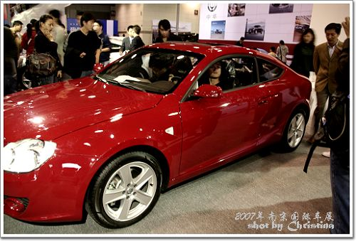
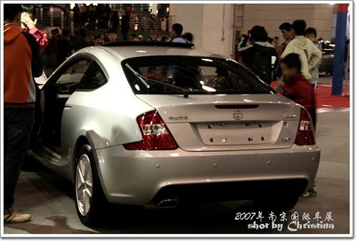


FIAT进口Bravo，意大利新品。具体价格不明，南京FIAT打算进口销售。据说是1.4T发动机，感觉挺不错。
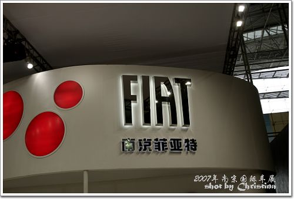
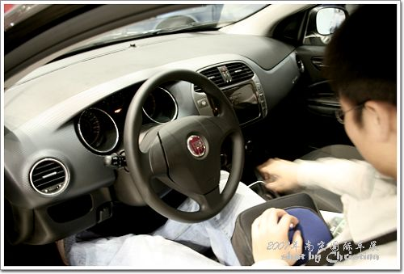
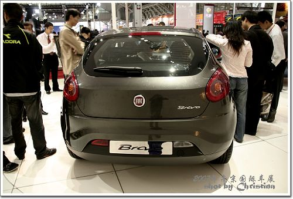
南汽生产的MG双门跑车，售价在25万左右。
据说南汽进口了英国MG整个生产流水线。前脸略显简单，其他外观还行，不知道性能如何。MG7的广告电视上经常可见。


新款MONDEO。

前脸改变的标志307，车尾还是一样丑，内饰也无变化。

车展上最迷人的车模。

雪铁龙展台上的“变形金刚”，6万造价，但不能变形。

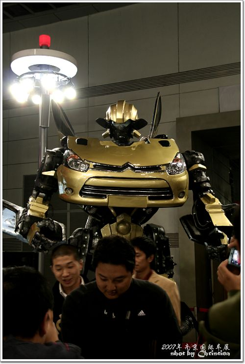
TOYOTA的混合动力车PRIUS，全进口，售价在28万左右。
南京有人开了，时速40以下用电，以上用汽油。

中途休息片刻。

Subaru的TRIBECA。

拖车上的汽车。

南京国际展览馆
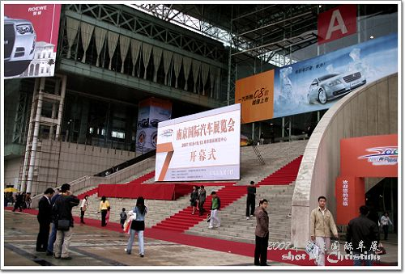
短暂假期 @ Oct 08, 2007
又回来上班，假期总是太短。
假期去了上海，恰逢特奥会，比赛的门票都是免费的。
关于上海，越来越感到厌恶，越来越感到不适应。
假期最后一天除了Audi A4和MG没能试驾，但试驾另几款车：新款CRV，Civic，Volvo S40，BMW320I。
Audi A4和BORA1.8T有什么区别？价格却贵出那么多，内饰粗糙，动力未必比BORA1.8T强出多少，尾灯来远看上去象大熊猫的脸，2.0T也许会考虑一下，但2.0T是进口发动机，对汽油要求比较高。我认为A4有5万车价是用来买车上那个LOGO的！08年春季新A4国产，车身还要加长。不过近期电视上的Audi广告做的好。
BMW320I操控性能强，价格自然不菲。零件进口国内组装，可一旦底盘损坏无法修理无法更换，只能报废。BMW里卖产品的营销员，那表情也特“高档”，东西贵不代表卖东西的人就“贵”，自我意识干吗那么强？对开宝马的印象就是高调张扬虚荣。
HONDA新款CRV 2.4L尊贵版，配置全，既有越野体型又不失轿车的精致，提速加速不错，总之比我现在开的马自达6 2.0排量的车有所提升，一个家庭有辆轿车，再有辆越野车会更好一些？这款车很得女性顾客青睐，新款CRV从订车到提车要3个月%$&!*^#我预订了此车，黑色，2.4L尊贵版，就是喜欢那个气质，除了没有黑色内饰订购外，没别的遗憾。
Civic 1.8排量的性价比最好，建议要买车的年轻人购买此车，70公里过弯丝毫没有问题，加速提速也比较出色。仪表盘设计很时尚，汽车的改装空间应该不会小。挺喜欢这款车，当然如果购买它不如继续开马6了。
Volvo S40的操控性不敢苟同，卖点就是安全性高，象块砖头似的。里面空间特别小。Volvo C30可以预订了，35.80万人民币，不值。
原打算去看看MINI的，最终还是懒得去，人家2万美圆的车，国内华而不实卖30多万人民币...被称为“二奶车”也是名副其实，试驾就算了吧！
讲到二奶车想起有一次和女友、还有她的BF在街上看到类似的进口二奶车，在车内驾驶的女子就象涂着红脸蛋的玩偶，她的BF指着这车对他妈妈讲：“这是二奶开的车。”
我女友问：“你以后给二奶买什么车呀？”
那男人认真的回答：“桑塔纳~~~”